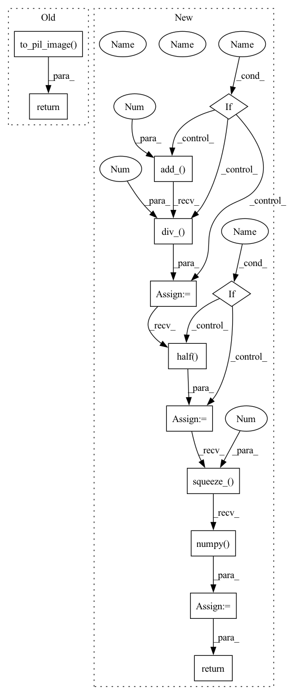

Pattern ID :5529
Before Change
Returns:
PIL.Image: RGB image data.
return F.to_pil_image( tensor)
def center_crop(lr: np.ndarray, hr: np.ndarray, image_size: int, upscale_factor: int) -> Tuple[np.ndarray, np.ndarray]:
Cut ``PIL.Image`` in the center area of the image.After Change
>>> tensor = torch.randn([1, 3, 128, 128])
>>> image = tensor2image(tensor, range_norm=False, half=False)
if range_norm :
tensor = tensor.add_(1.0).div_(2.0 )
if half :
tensor = tensor.half()
image = tensor.mul_(255.0).squeeze_(0).squeeze_(0).cpu().numpy()
return image
def convert_rgb_to_y(image: Any) -> Any:In pattern: SUPERPATTERN
Frequency: 3
Non-data size: 13
Instances Fragment ID: 19389797
Project Name: lornatang/srgan-pytorch
Commit Name: 52ae3306402eb591943d567636b199509c88b583
Time: 2021-12-14
Author: liuchangyu1111@gmail.com
File Name: imgproc.py
M Class Name: AnonimousClass
N Class Name: AnonimousClass
M Method Name: tensor2image(3)
N Method Name: tensor2image(1)
M Parent Class:
N Parent Class:
M File Name: imgproc.py
N File Name: imgproc.py
M Start Line: 71
M End Line: 80
N Start Line: 75
N End Line: 93
Before Change
Args:
tensor (torch.Tensor): The image that needs to be converted to ``PIL.Image``.
return F.to_pil_image( tensor)
def convert_rgb_to_ycbcr(image: np.ndarray):
Convert RGB format image to YCbCr format.After Change
>>> image = tensor2image(tensor, range_norm=False, half=False)
if range_norm :
tensor = tensor.add_(1.0).div_(2.0 )
if half :
tensor = tensor.half()
image = Image.fromarray(tensor.squeeze_(0).mul_(255).clamp_(0, 255).permute(1, 2, 0).to("cpu", torch.uint8).numpy() )
return image
def convert_rgb_to_y(image: np.ndarray or torch.Tensor) -> torch.Tensor: Fragment ID: 19389783
Project Name: lornatang/fsrcnn-pytorch
Commit Name: 03d5cd03ad3c13e301bfcf77904e4144d91fc8d2
Time: 2021-11-09
Author: liuchangyu1111@gmail.com
File Name: imgproc.py
M Class Name: AnonimousClass
N Class Name: AnonimousClass
M Method Name: tensor2image(3)
N Method Name: tensor2image(1)
M Parent Class:
N Parent Class:
M File Name: imgproc.py
N File Name: imgproc.py
M Start Line: 69
M End Line: 75
N Start Line: 83
N End Line: 105
Before Change
Returns:
PIL.Image: RGB image data.
return F.to_pil_image( tensor)
def center_crop(lr: np.ndarray, hr: np.ndarray, image_size: int, upscale_factor: int) -> Tuple[np.ndarray, np.ndarray]:
Cut ``PIL.Image`` in the center area of the image.After Change
>>> tensor = torch.randn([1, 3, 128, 128])
>>> image = tensor2image(tensor, range_norm=False, half=False)
if range_norm :
tensor = tensor.add_(1.0).div_(2.0 )
if half :
tensor = tensor.half()
image = tensor.squeeze_(0).permute(1, 2, 0).mul_(255).clamp_(0, 255).cpu().numpy() .astype("uint8")
return image
def convert_rgb_to_y(image: Any) -> Any: Fragment ID: 19389791
Project Name: lornatang/esrgan-pytorch
Commit Name: 862981e47827602ecba051661722096086ff453e
Time: 2022-01-05
Author: liuchangyu1111@gmail.com
File Name: imgproc.py
M Class Name: AnonimousClass
N Class Name: AnonimousClass
M Method Name: tensor2image(3)
N Method Name: tensor2image(1)
M Parent Class:
N Parent Class:
M File Name: imgproc.py
N File Name: imgproc.py
M Start Line: 71
M End Line: 80
N Start Line: 75
N End Line: 94